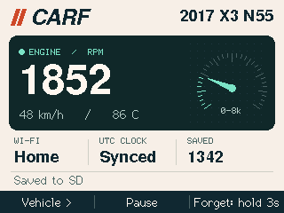

Read the signals
The OBDLink MX+ sends supported engine, speed, and coolant readings directly to the Core2 over Bluetooth.
OBD-II trip logger
Build a pocket-sized logger for your car. Capture readings on the road, sync them at home, and ask questions about the trip.

The OBDLink MX+ sends supported engine, speed, and coolant readings directly to the Core2 over Bluetooth.
The Core2 timestamps readings and writes them to microSD. Trips can be recorded with home Wi-Fi out of range.
Home Wi-Fi carries saved batches to your PostgreSQL receiver. A read-only MCP connection lets you query the trip with an LLM.
Vehicle profiles
Start with generic OBD-II. Select a vehicle profile to request extra signals when the car supports them.
Read the signal guide